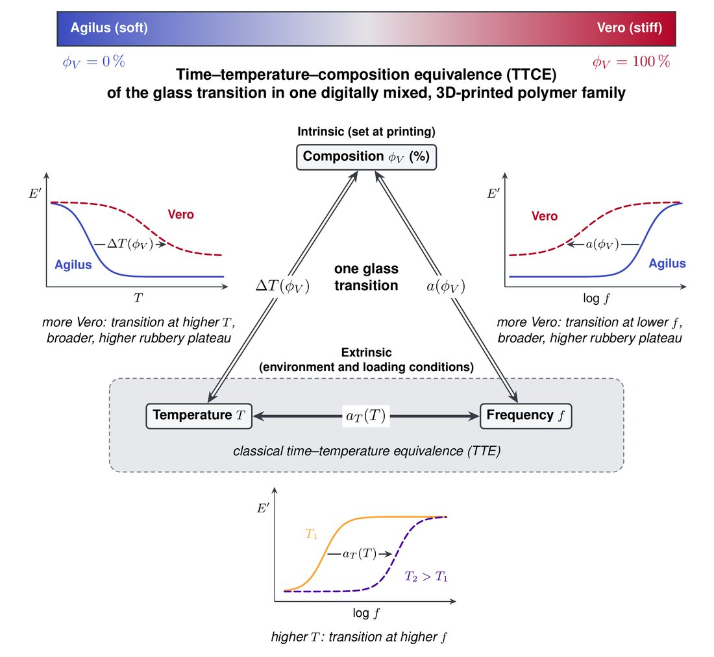
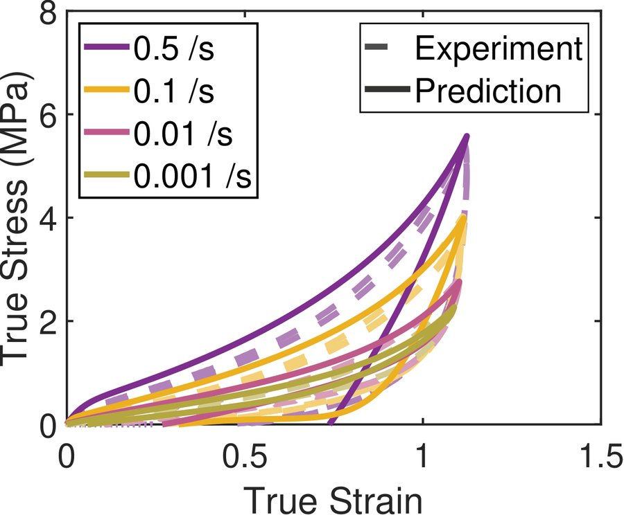
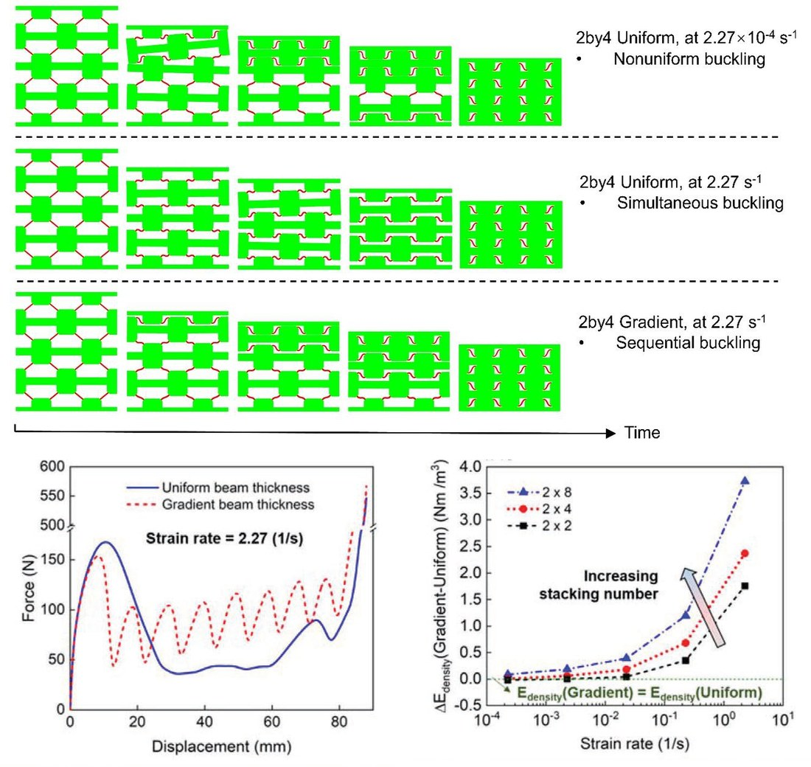
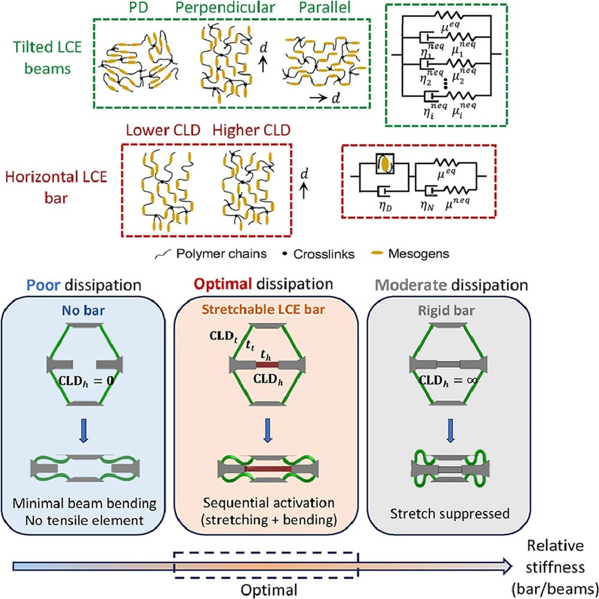
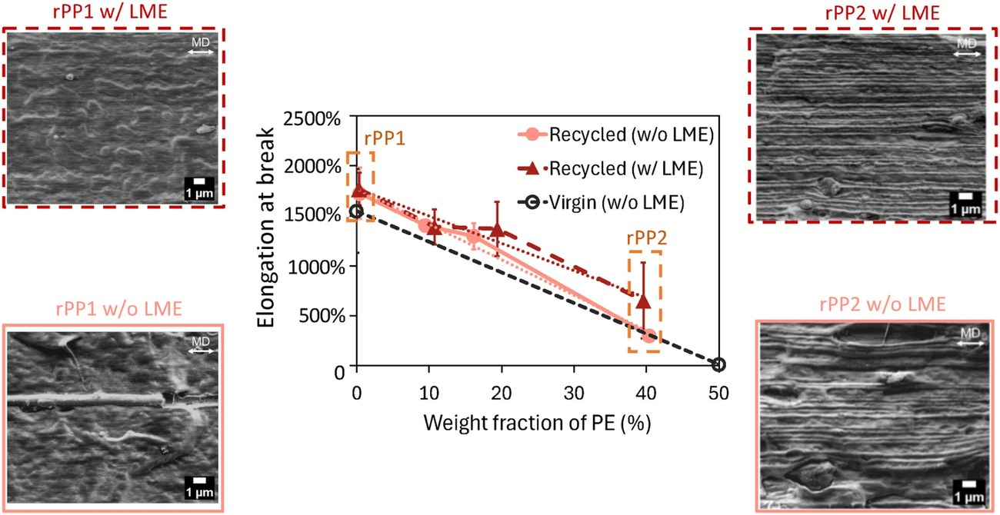

Research
My research lies at the intersection of solid mechanics, polymeric materials, and advanced manufacturing. It advances the experimental, theoretical, and computational mechanics of polymeric materials and structures toward resilient and sustainable engineered systems. The central aim is to establish predictive relationships among processing, microstructure, time-dependent mechanical behavior, and structural performance, and to use them in the design and manufacture of polymeric materials and structures. The work spans the life cycle of a polymeric part: design and manufacture for a prescribed response, reliable performance over time in service, and recycling into new load-bearing use.
Three connected directions pursue this aim, combining large-deformation mechanical testing across strain rates and temperatures, dynamic mechanical analysis, and digital image correlation with constitutive theory, finite-element simulation through user-defined material models, machine learning, and multimaterial 3D printing. Constitutive models for polymer families inform structural design, designs define targets for manufacturing, and new printed or recycled materials provide data that extend the models. The applications range from impact protection and deployable aerospace structures to biomedical devices and the load-bearing use of recycled plastics.
1. Physics-Based Constitutive Discovery for Polymer Families
Physics-based constitutive models for entire families of polymers, developed by combining physical insight with machine learning.
Constitutive models relate the stress in a material to its deformation history, and they underpin finite-element analysis and design. For polymers whose response is viscoelastic and viscoplastic, spans the glass transition, and depends on environmental conditions, such models are typically developed and calibrated for one material at a time, which limits how quickly new materials reach engineering use. Data-driven methods have accelerated the identification of constitutive models, but they have largely addressed hyperelastic behavior, and models represented as general-purpose functions offer limited physical interpretation. This direction differs in three respects. It addresses time- and history-dependent behavior, including viscoelasticity and viscoplasticity through the glass transition. It seeks one physics-based model for an entire family of polymers, in which composition, crosslink density, or processing conditions enter as variables, in place of one model per material. And it combines physical insight with machine learning, including symbolic regression, to identify the mechanisms involved, such as network stretching, reptation, and glassy yield, together with their closed-form functional forms, so that the resulting models remain interpretable and can be implemented directly in finite-element codes. Once a model is established for a family, the behavior of a new member can be predicted from a small number of calibration tests. The long-term goal is an open library of physics-based constitutive models, organized by mechanism, that can be extended to new polymer families as they are introduced.
This direction builds on my postdoctoral work on digitally mixed polymers, printed voxel by voxel from a rubbery and a glassy photopolymer. Combining large-deformation compression tests over three orders of magnitude in strain rate with dynamic mechanical analysis, I showed that temperature, frequency, and composition act jointly on the glass transition of the entire family, a time–temperature–composition equivalence. On this basis, I formulated a single finite-strain viscoelastic–viscoplastic framework for the family from its physical mechanisms, implemented it for finite-element analysis, and showed that it predicts the response of a composition withheld from calibration. Mechanism-based formulations of this kind provide the starting point for discovery with machine learning. Photopolymers cured by digital light processing, in which the light dose controls crosslink density, are the next family to be studied.
Applications: rapid characterization of new and printed polymers; predictive simulation of polymeric components across loading rate and temperature; design of graded and multimaterial parts.


Relevant Publications
- B. Shen, S. K. Kumar, M. C. Boyce*. Time–temperature–composition equivalence of the viscoelastic behavior through the glass transition of digitally mixed 3D-printed polymers. arXiv:2610.14986 (2026).
- B. Shen, M. C. Boyce*. Composition-dependent nonlinear viscoelastic–viscoplastic behavior and constitutive framework for digitally mixed polymers spanning the glass transition. arXiv:2609.04399 (2026).
- J. García-Ávila, B. Shen, M. Rausch, M. C. Boyce, A. Buganza-Tepole*. Data-driven discovery of composition-dependent constitutive models for hyperelasticity and viscoelasticity of digital materials. arXiv:2609.04541 (2026).
- Z. Wei+, B. Shen+*, Z. Usmanova, U. H. Bootwala, R. Bai*. Thermoviscoelasticity of polydomain liquid crystal elastomers regulated by soft elasticity. arXiv:2605.11455 (2026).
- A. E. H. Chehade, B. Shen, C. M. Yakacki, T. D. Nguyen, S. Govindjee*. Finite element modeling of viscoelastic liquid crystal elastomers. International Journal for Numerical Methods in Engineering, 125(16), e7510 (2024).
2. Programming Structures in Time
Co-design of the intrinsic time scales of the material and the time scales of the structure, to achieve a prescribed time-dependent response.
The function of architected structures often relies on geometric nonlinearity, such as buckling, snap-through, and folding, yet these structures are commonly designed with the material idealized as linear elastic or hyperelastic. A polymeric structure involves two sets of time scales: those of the material, set by how quickly it relaxes, and those of the structure, such as the rate at which an instability develops and the time required for a deformed region to recover. Whether a region responds in a rubbery or a glassy manner during an instability depends on how these two time scales compare. This direction studies how they interact and how they can be designed together. In a printed structure, the local composition sets the local relaxation behavior, and the geometry determines how relaxation translates into load transfer, buckling, and recovery. Target responses include energy absorption tailored to the range of impact speeds a structure must withstand, deployment and shape change in a prescribed sequence after long-term storage, vibration damping over a chosen frequency range, and soft robots whose motions are sequenced passively by the material, all without sensors or active control. Graded polymers with a designed rate-dependent response are also relevant to protective padding and to soft biomedical components such as implants. The long-term goal is a set of design principles that relate material and structural time scales, and a design tool that translates a required response over time into composition and geometry.
This direction builds on my doctoral research on architected lattices made of liquid crystal elastomers, in which I combined mechanical testing with finite-element simulations based on viscoelastic constitutive models and showed that the viscoelasticity of the material alters the structural response. The interplay of nonlinear viscoelasticity and snap-through caused buckled layers to recover locally and partially, a path-dependent response that increased energy absorption. In a subsequent design, a stretchable elastomer bar that competes with beam buckling activated stretching and bending members in sequence and increased energy absorption by up to 2.5 times relative to a rigid bar. My ongoing work on printed fiber networks, presented at the 2026 Society of Engineering Science Annual Technical Meeting, examines how material and structural time scales interact in a printed structure.
Applications: impact protection with energy absorption tailored to the loading rate; deployable and shape-morphing structures; vibration damping; passively sequenced soft robots; soft biomedical components.


Relevant Publications
- B. Shen*, Y. Jiang, C. M. Yakacki, S. H. Kang*, T. D. Nguyen. Combining stretching-dominated and bending-dominated dissipation behavior to optimize energy absorption in liquid crystal elastomer-based lattice structures. Journal of the Mechanics and Physics of Solids, 209, 106497 (2026).
- S.-Y. Jeon+, B. Shen+, N. A. Traugutt, Z. Zhu, L. Fang, C. M. Yakacki, T. D. Nguyen, S. H. Kang*. Synergistic energy absorption mechanisms of architected liquid crystal elastomers. Advanced Materials, 34(14), 2200272 (2022).
- N. Hertlein, B. Shen, S. H. Kang, P. R. Buskohl*. Computational analysis of buckling-based stiffness programming of liquid crystal elastomer beams. ASME International Design Engineering Technical Conferences (IDETC), V008T08A040 (2023).
- B. Shen, O. Erol, L. Fang, S. H. Kang*. Programming the time into 3D printing: current advances and future directions in 4D printing. Multifunctional Materials, 3(1), 012001 (2020).
- B. Shen, S. H. Kang*. Designing self-oscillating matter. Matter, 4(3), 766–769 (2021).
3. Advanced and Sustainable Manufacturing
Mechanics-based characterization and modeling of processing–structure–property relations, for multimaterial 3D-printed and recycled polymers.
Manufacturing and processing determine the microstructure on which the first two directions depend: the composition placed voxel by voxel in multimaterial 3D printing, the crosslink density set by the light dose in digital light processing, and the morphology of blends and recyclates formed during melt processing. For printed polymers, this direction connects printing parameters, such as the composition field and the light dose, to the resulting constitutive behavior, so that the models of the first direction and the designs of the second can be realized as physical parts.
For recycled polymers, the focus is on post-consumer polyolefins, which are rarely used in demanding structural applications, largely because their contaminants and processing histories vary from batch to batch. This direction develops characterization methods and predictive tools, including constitutive models, that relate processing conditions to the size, shape, and continuity of contaminant domains, to crystallinity and molecular weight, and to the resulting anisotropic mechanical response. These relations can guide the choice and improvement of processing conditions, and they allow a batch to be qualified from a small set of standard measurements, such as calorimetry, microscopy, and rheometry. Aging in service, which proceeds through chain scission and crosslinking, can be described with the same variables. The long-term goal is to support the upcycling of plastic waste into load-bearing products and a more circular plastics economy, with processing and manufacturing chosen on the basis of predicted mechanical performance.
This direction builds on my experience with both routes. As an undergraduate, I designed and developed a multi-axis rotary 3D printer for curved-layer fused deposition modeling, and at Columbia I design and print voxel-graded polymer structures. In my doctoral research, I characterized films extruded from post-consumer polypropylene to establish their processing–structure–property relations. Combining calorimetry, electron microscopy, rheometry, tensile testing, and X-ray scattering, I showed that polyethylene domains drawn into elongated striations, rather than lamellar orientation, govern the anisotropic ductility, and that films extruded with a layer-multiplying element, which splits and restacks the melt, had approximately twice the transverse ductility and matched the performance of virgin material with the same polyethylene content.
Applications: load-bearing parts from recycled plastics; processing design for the upcycling of plastic waste; graded and multimaterial components made by 3D printing.

Relevant Publications
- B. Shen, M. L. Coughlin, S. O. Nzeh, K. B. Migler, D. O. Kazmer, T. D. Nguyen*. The anisotropic structure and mechanical behavior of films extruded from recycled polypropylene. Polymer Engineering & Science, 66(4), 2503–2523 (2026).
- D. O. Kazmer, S. O. Nzeh*, B. Shen, D. C. Elbert, R. Nagarajan, M. Sobkowicz-Kline, T. D. Nguyen. Characterization, processing, and modeling of industrial recycled polyolefins. Polymer Engineering & Science, 64(10), 4801–4815 (2024).
- D. Zhao, T. Li, B. Shen, Y. Jiang, W. Guo*, F. Gao. A multi-DOF rotary 3D printer: machine design, performance analysis and process planning of curved layer fused deposition modeling. Rapid Prototyping Journal, 26(6), 1079–1093 (2020).